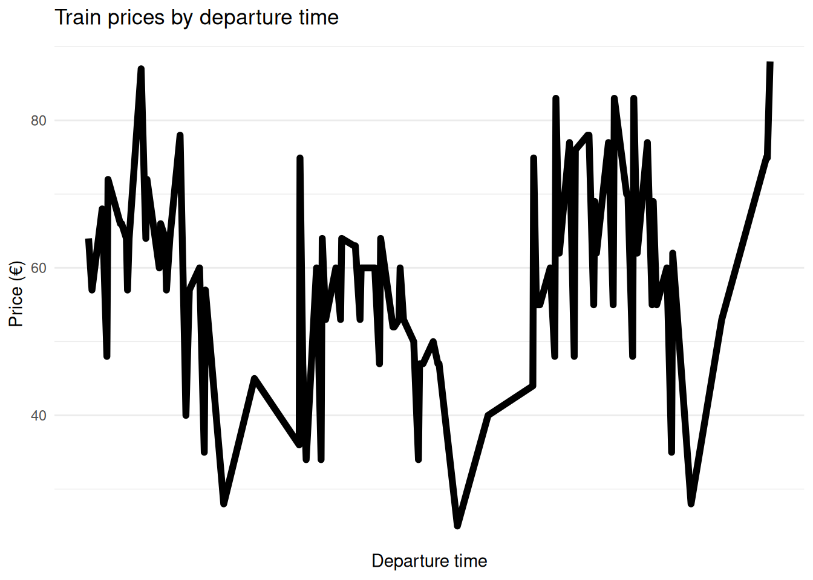
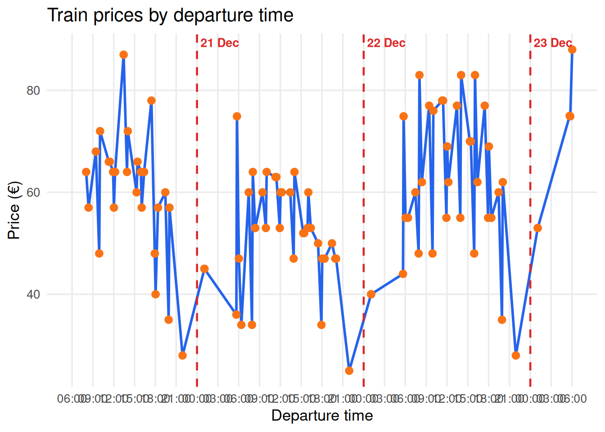

Chapter 8: selenium
Important
The videos in this chapter sometimes refer to IMDb (Internet Movie Database), yet, they are not legally accessible for scraping anymore. Therefore, I will provide you with a different example in the exercises section.
Sometimes you will run into the problem of a website being not as “scrape-able” as you might have wanted it to. This might be due to Javascript, them blocking you for not being a “real” person, captchas, login forms, you name it. To avoid this, you can use a package called selenium. What it basically does is control a web browser. Its original purpose is to automate testing of web-based applications. However, it’s also perfectly suited for helping you with your scraping endeavors.
selenium is a Python application. An R wrapper (RSelenium) exists, yet its rather tedious to use, since you would likely have to run your browser out of a Docker container. And if you’re on a recent Mac with a Silicon processor, these containers might not even exist yet. Therefore, in this script you will use the original Python version and run Python in this quarto document from your R session. For this, you can use reticulate, which allows you to switch between the R and the Python world. Hence, you can do your scraping in Python and your data manipulations in R and store all of this in one notebook.
Install Python using reticulate and miniconda
To get started with selenium, you first need to activate your Python environment. Then, you need to install the selenium package.
library(reticulate)
use_condaenv("toolbox_env", required = TRUE)
conda_install("toolbox_env", "selenium")selenium
Now we’re good to go and can start working with selenium. In this tutorial, you will also learn about some basics of coding in Python. Even more so than in R, we will rely on custom-made functions that we need to define as well as for loops. They are different insofar as we do not need to preallocate space to objects – such as lists – but rather can grow them iteratively (similar to dplyr::bind_rows()/base R’s rbind()). What’s more is that proper indentation of code is key here. In this tutorial, though, we will focus on navigating around websites and then, once we are done, grabbing their raw html code, which we can then read in using xml2::read_html() and wrangle using rvest functions. If you want to go full Python, you can get into BeautifulSoup, Python’s rvest equivalent.
Before we start, we will create a folder called temp to store all the HTML files we download:
dir.create("temp", showWarnings = FALSE)Send input to forms and boxes
With selenium we can also send input to web forms in an automated manner by using send_keys(). Let’s look at Rotten Tomatoes for this.
Imagine we are interested in films with top gun in the title.
driver.get("https://www.rottentomatoes.com/")Unfortunately, a cookie banner immediately appears, obscuring our view. It’s important to dismiss it, as it could otherwise interfere with our interactions with the website. Luckily, we can easily get rid of it by clicking the accept button:
# wait for the cookie banner to appear
time.sleep(5)
# click the button
driver.find_element(By.CSS_SELECTOR, '#onetrust-accept-btn-handler').click()First, we need to find the search box, for instance using the CSS selector. We also need to locate the button. And finally we can send our input text and click the button.
search_box = driver.find_element(By.CSS_SELECTOR, 'input[data-qa="search-input"]')
search_button = driver.find_element(By.CSS_SELECTOR, '[data-qa="search-submit"]')
search_box.send_keys("top gun")
time.sleep(2)
search_button.click()If you want to do this in a loop, make sure to clear the search box in between searches:
search_box.clear() Captcha and Error handling
Another common problem you might encounter when scraping the web is that you need to solve captchas to prove that you are human. Since selenium is simulating a browser, you can just intervene whenever and solve them yourself. For this, we need to write a function that detects when human input is required, rings a little bell, and then, once you have solved the little riddle, allows you to continue.
def play_alert_windows():
import winsound
winsound.Beep(1000, 500) # 1000 Hz for 500ms
def play_alert_mac():
import subprocess
subprocess.run(["afplay", "/System/Library/Sounds/Ping.aiff"])
def play_alert_linux():
import subprocess
subprocess.run(["paplay", "/usr/share/sounds/freedesktop/stereo/complete.oga"])
def captcha_detected(driver):
page_source = driver.page_source.lower()
captcha_keywords = ["captcha", "recaptcha", "verify you're human", "roboter"]
return any(keyword in page_source for keyword in captcha_keywords)
def solve_captcha_manually():
import time
play_alert_linux() # or play_alert_windows() if you're using a Windows machine
print("CAPTCHA detected! Please solve it manually.")
input("Press Enter when you've solved the CAPTCHA...")
print("Resuming scrape...")
time.sleep(2)So let’s see how this works in real life using a demo website.
driver.get("https://www.google.com/recaptcha/api2/demo")
if captcha_detected(driver):
solve_captcha_manually()
# Here the code stos until you press Enter in the Console!
submit_button = driver.find_element(By.CSS_SELECTOR, "#recaptcha-demo-submit")
submit_button.click()
Note
An alternative to a simple ping is to send an email notification. This can be particularly useful when running your script on remote computing resources, such as the SC resources, rather than on your own computer.
Further links
Exercises
In general, you could try all the rvest exercises with selenium to see how these things differ. Also every page is different, therefore it will probably be best if you just start with your own things. However, here is a quite tricky example.
- I want to visit my family over the Christmas holidays and need to travel by train from Leipzig Hbf to Regensburg Hbf. My travel dates are flexible: I can depart anytime between December 20 and December 22, 2026 (inclusive). Please use the Deutsche Bahn website (bahn.de) to find all available train connections within this period. Put everything in a
tibbleformat, containing date and time, number of transfers, as well as price.
Hint: Before you start, think about how to approach this task efficiently and elegantly. Clicking buttons and filling out forms isn’t always necessary—there may be a simpler way!
Bonus: Make a visualization of the price (y-axis) over time (x-axis). What kind of patterns do you see?
Solution. Click to expand!
Let’s start with the search. Rather than filling out the form on the website (which can be quite cumbersome, as the code at the very end demonstrates), we’ll construct a direct search URL. This allows us to specify our search parameters directly in the URL, somewhat similar to making an API request.
driver.get(
"https://www.bahn.de/buchung/start" # website
"#sts=true&so=Leipzig%20Hbf&zo=Regensburg%20Hbf" # start and end
"&kl=2&sot=ST&zot=ST" # second class
"&soei=8010205&zoei=8000309" # start and end as numbers (8010205 == Hbf Leipzig)
"&hd=2026-12-20T08:00:00" # earliest departure date & time
)
time.sleep(5)
click_bahn_cookie(driver)No cookie banner found. Cookies may already be accepted.And there we go! Often you need to try a lot. It took me probably 20 tries before the latter search query worked as intended.
We now have a list of train connections departing between approximately 8 a.m. and 10 a.m. To retrieve more connections, we have two options:
Option A: Click the “Spätere Verbindungen” (Later Connections) button to load additional results. However, be aware that earlier connections may eventually disappear from the page as new ones are loaded.
Option B: Take a more systematic approach. Instead of clicking through the results, we’ll identify the latest departure time on the current page and use it to construct a new search URL.
We’ll go with Option B, allowing us to retrieve connections step by step without relying on the website’s navigation buttons:
import time
from datetime import datetime, timedelta
from pathlib import Path
from selenium.webdriver.common.by import By
from selenium.webdriver.support.ui import WebDriverWait
from selenium.webdriver.support import expected_conditions as EC
Path("temp").mkdir(exist_ok=True)
departure = datetime(2026, 12, 20, 8, 0)
end_time = datetime(2026, 12, 22, 22, 0)
wait = WebDriverWait(driver, 15)
while departure < end_time:
# Build search URL
url = (
"https://www.bahn.de/buchung/start"
"#sts=true&so=Leipzig%20Hbf&zo=Regensburg%20Hbf"
"&kl=2&sot=ST&zot=ST"
"&soei=8010205&zoei=8000309"
f"&hd={departure:%Y-%m-%dT%H:%M:00}"
)
driver.get(url)
# Wait for connections to appear
wait.until(EC.presence_of_element_located(
(By.CSS_SELECTOR, ".reiseplan__uebersicht-uhrzeit-von time")
))
# Save HTML
filename = f"temp/bahn_page_{departure:%Y-%m-%d_%H-%M}.html"
Path(filename).write_text(driver.page_source, encoding="utf-8")
# Get all departure times
elements = driver.find_elements(
By.CSS_SELECTOR,
".reiseplan__uebersicht-uhrzeit-von time"
)
times = [
datetime.strptime(el.get_attribute("datetime"), "%H:%M").time()
for el in elements
]
# Get the latest departure
latest = times[-1]
print(f"Saved {filename} | Latest departure: {latest:%H:%M}")
# Calculate next search time
next_departure = datetime.combine(departure.date(), latest)
# Handle midnight crossing
if next_departure < departure:
next_departure += timedelta(days=1)
departure = next_departure + timedelta(minutes=1)
# give the server a pause
time.sleep(1)
print("Finished.")Now that we have all the data we need, we can extract the relevant information. Back to R!
needs(tidyverse, rvest)
# load files
files <- list.files(
"temp",
pattern = "^bahn_page_.*\\.html$", # As you can see beautiful RegEx can be used everywhere!
full.names = TRUE
)
# at the bahn.de site months are abbreviated in German, so we have to fix that (later)
months <- c(
"Jan." = "01", "Feb." = "02", "Mär." = "03",
"Apr." = "04", "Mai" = "05", "Jun." = "06",
"Jul." = "07", "Aug." = "08", "Sep." = "09",
"Okt." = "10", "Nov." = "11", "Dez." = "12"
)
# Define an extraction function
get_connections <- function(file) {
page <- read_html(file)
# get the current date
search_date <- page |>
html_element("#SearchZeitauswahlButton ._dateFormat") |>
html_text() |>
stringr::str_remove("^[^.]+\\.\\s*") |>
stringr::str_replace_all(months) |>
as.Date(format = "%d. %m %Y")
# First lets see how many connections there are
connections <- page |>
html_elements("li.verbindung-list__result-item")
# If we cross midnight, there will be a new date here
headings <- connections |>
html_element(".reiseloesung-heading") |>
html_text2()
# We will use this information to calculate the departure date
departure_date <- as.Date(search_date) + cumsum(!is.na(headings))
# Extract departures
departure_time <- connections |>
html_element(".reiseplan__uebersicht-uhrzeit-von time") |>
html_attr("datetime")
departure <- as.POSIXct(
paste(departure_date, departure_time),
format = "%Y-%m-%d %H:%M",
tz = "Europe/Berlin"
)
# Extract Arrivals
arrival_time <- connections |>
html_element(".reiseplan__uebersicht-uhrzeit-nach time") |>
html_attr("datetime")
arrival <- as.POSIXct(
paste(departure_date, arrival_time),
format = "%Y-%m-%d %H:%M",
tz = "Europe/Berlin"
)
# Fix arrival after midnight (by adding a day in seconds = 86400)
arrival <- arrival + (arrival < departure) * 86400
# Calculate durations
duration <- as.numeric(difftime(arrival, departure, units = "mins"))
# Extract number of transfers
# My initial, naive approach: This works as long as at least one transfer is required. For direct connections (0 transfers), however, the HTML element is missing, so this approach fails to capture connections with 0 transfers.
# transfers <- page |>
# html_elements(".dauer-umstieg__umstiege--desktop") |>
# html_text() |>
# parse_number()
transfers <- page |>
html_elements(".dauer-umstieg") |> # dauer-umstieg are still there even no transfer is necessary
map_int(\(x) {
value <- x |>
html_element(".dauer-umstieg__umstiege--desktop") |> # if no transfer is necessary this will give us a NA
html_text()
if (is.na(value)) 0 else as.integer(parse_number(value))
})
price <- page |>
html_elements("._preis span") |>
html_text() |>
parse_number(locale = locale(decimal_mark = ","))
tibble(
file = basename(file),
departure = departure,
arrival = arrival,
duration = duration,
transfers = transfers,
price = price
)
}
trains <- map_dfr(files, get_connections) |>
distinct(departure, arrival, duration, transfers, price, .keep_all = TRUE) # remove identical entries
trains# A tibble: 99 × 6
file departure arrival duration transfers price
<chr> <dttm> <dttm> <dbl> <int> <dbl>
1 bahn_page_2… 2026-12-20 08:02:00 2026-12-20 11:23:00 201 2 64.0
2 bahn_page_2… 2026-12-20 08:23:00 2026-12-20 12:10:00 227 2 57.0
3 bahn_page_2… 2026-12-20 09:26:00 2026-12-20 13:08:00 222 2 68.0
4 bahn_page_2… 2026-12-20 09:55:00 2026-12-20 13:13:00 198 1 48.0
5 bahn_page_2… 2026-12-20 10:02:00 2026-12-20 13:23:00 201 2 72.0
6 bahn_page_2… 2026-12-20 11:18:00 2026-12-20 14:24:00 186 0 66.0
7 bahn_page_2… 2026-12-20 11:26:00 2026-12-20 14:24:00 178 2 66.0
8 bahn_page_2… 2026-12-20 11:55:00 2026-12-20 15:13:00 198 1 64.0
9 bahn_page_2… 2026-12-20 12:02:00 2026-12-20 15:23:00 201 2 57.0
10 bahn_page_2… 2026-12-20 12:12:00 2026-12-20 16:10:00 238 2 64.0
# ℹ 89 more rowsBonus
Here’s a simple plot:
ggplot(trains, aes(x = departure, y = price)) +
geom_line(size = 2) +
scale_x_continuous(
breaks = seq(8, 32, 2),
labels = \(x) sprintf("%02d:00", x %% 24)
) +
labs(
title = "Train prices by departure time",
x = "Departure time",
y = "Price (€)"
) +
theme_minimal()Warning: Using `size` aesthetic for lines was deprecated in ggplot2 3.4.0.
ℹ Please use `linewidth` instead.
Yet, we can do better:
library(ggplot2)
# I fix a starting date
start <- as.POSIXct("2026-12-20 06:00", tz = "Europe/Berlin")
# I will use these to mark midnight
midnights <- seq(
as.POSIXct("2026-12-21 00:00", tz = "Europe/Berlin"),
max(trains$departure),
by = "day"
)
ggplot(trains, aes(x = departure, y = price)) +
geom_line(color = "#2563EB", linewidth = 1) +
geom_point(color = "#F97316", size = 2.5) +
# Midnight lines
geom_vline(
xintercept = midnights,
linetype = "dashed",
color = "#DC2626",
linewidth = 0.8
) +
# Date labels at the top, just right of midnight
annotate(
"text",
x = midnights + 1800,
y = Inf,
label = format(midnights, "%d %b"),
hjust = 0,
vjust = 1.5,
color = "#DC2626",
fontface = "bold",
size = 3.5
) +
scale_x_datetime(
breaks = seq(start, max(trains$departure), by = "3 hours"),
date_labels = "%H:%M",
limits = c(start, NA)
) +
labs(
title = "Train prices by departure time",
x = "Departure time",
y = "Price (€)"
) +
theme_minimal(base_size = 13) +
theme(
panel.grid.minor = element_blank(),
axis.text.x = element_text(size = 10)
)
Finally, I’d like to share my first attempt at automating searches on bahn.de using Selenium. It works, but I suspect it’s still quite error-prone!
import time
from selenium.webdriver.common.by import By
from selenium.webdriver.common.keys import Keys
driver.get("https://www.bahn.de/")
click_bahn_cookie(driver)
time.sleep(5)
wait = WebDriverWait(driver, 15)
# Departure
start = wait.until(EC.element_to_be_clickable(
(By.CSS_SELECTOR, '[name="quickFinderBasic-von"]')
))
start.send_keys("Leipzig Hbf")
start.send_keys(Keys.ARROW_DOWN, Keys.ENTER)
# Destination
destination = wait.until(EC.element_to_be_clickable(
(By.CSS_SELECTOR, '[name="quickFinderBasic-nach"]')
))
destination.send_keys("Regensburg Hbf")
destination.send_keys(Keys.ARROW_DOWN, Keys.ENTER)
# Open date picker
date_button = driver.find_element(
By.CSS_SELECTOR, ".quick-finder-options__hinfahrt"
)
date_button.click()
time.sleep(2)
# enter date
day = driver.find_element(By.CSS_SELECTOR, "input._dayInput")
month = driver.find_element(By.CSS_SELECTOR, "input._monthInput")
year = driver.find_element(By.CSS_SELECTOR, "input._yearInput")
day.send_keys(Keys.CONTROL + "a")
time.sleep(0.5)
day.send_keys("20")
time.sleep(0.5)
month.send_keys("12")
time.sleep(0.5)
year.send_keys("2026")
time.sleep(0.5)
# Set departure time to 08:00
hours = driver.find_element(By.CSS_SELECTOR, ".test-hours-input")
minutes = driver.find_element(By.CSS_SELECTOR, ".test-minutes-input")
hours.send_keys(Keys.CONTROL + "a")
time.sleep(0.5)
hours.send_keys("8")
time.sleep(0.5)
minutes.send_keys("00")
time.sleep(0.5)
# Confirm date selection
apply_button = wait.until(EC.element_to_be_clickable(
(By.CSS_SELECTOR, "button._button--commit")
))
apply_button.click()
# Submit search
search_button = wait.until(EC.element_to_be_clickable(
(By.CSS_SELECTOR, "button.quick-finder-basic__search-btn--desktop")
))
search_button.click()- Check out all the movies’ pages using a loop and adequate waiting times. We want all movies with “top gun”, “pirates of the caribbean”, “fear and loathing in las vegas”, and “batman” in the title.
First, we need to find the search box, for instance using the CSS selector. We also need to locate the button. And finally we can send our input text and click the button.
from selenium.common.exceptions import NoSuchElementException
driver.get("https://rottentomatoes.com")
# wait for the cookie banner to appear
time.sleep(5)
# click the button
try:
# Accept cookies if the button exists
driver.find_element(By.CSS_SELECTOR, '#onetrust-accept-btn-handler').click()
except NoSuchElementException:
# No button found: cookies may already have been accepted
print("No cookie banner found. Continuing...")No cookie banner found. Continuing...
movie_list = ["top gun", "pirates of the caribbean", "fear and loathing in las vegas", "batman"] #this is how you create a list to loop over in python- Store the results in HTML files.
Solution. Click to expand!
for movie in movie_list:
# Find elements inside the loop (good practice)
search_box = driver.find_element(By.CSS_SELECTOR, 'input[data-qa="search-input"]')
search_button = driver.find_element(By.CSS_SELECTOR, '[data-qa="search-submit"]')
# Clear previous search
search_box.clear() # Clear previous text
# Perform search
search_box.send_keys(movie)
wait_random(1, 3)
search_button.click()
# Save results
movie_file = movie.replace(" ", "_")
output_path = f"temp/movie_{movie_file}.html"
html = driver.page_source
save_html(html, output_path)
wait_random(1, 3)Again, this could have been done more easily via https://www.rottentomatoes.com/search?search=SEARCHTERM. However, it is good to practice!
- Use
rvestto extract the exact years and titles of the results.
Solution. Click to expand!
movies <- list.files(
"temp",
pattern = "^movie_.*\\.html$",
full.names = TRUE
) |>
map_dfr(\(file) {
rows <- read_html(file) |>
html_elements('search-page-media-row[data-qa="data-row"]')
tibble(
title = rows |>
html_element('[data-qa="info-name"]') |>
html_text2(),
year = rows |>
html_attr("release-year") |>
as.integer()
)
})